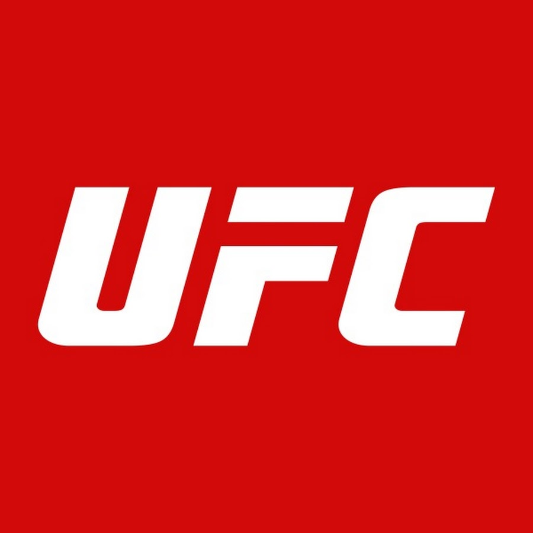
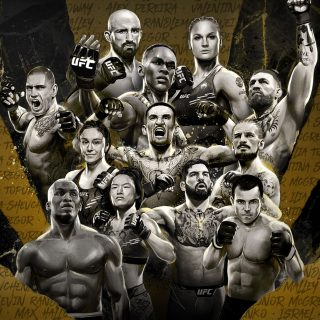

Ulubiona Federacja: UFC
Ultimate Fighting Championship (UFC) to największa i najbardziej prestiżowa organizacja mieszanych sztuk walki (MMA) na świecie. Założona w 1993 roku przez Arta Davie, Roriona Gracie i innych, UFC miało na celu wyłonienie najlepszego stylu walki w bezpośrednich starciach zawodników z różnych dyscyplin.
Historia UFC
Początkowo UFC organizowało starcia mające pokazać, jak różne style walki – od brazylijskiego jiu-jitsu po boks – radzą sobie w prawdziwej walce. Royce Gracie, dominując w pierwszych edycjach, udowodnił skuteczność BJJ, pokonując znacznie większych przeciwników.
Wraz z rozwojem organizacji wprowadzono kategorie wagowe, zasady oraz standardy bezpieczeństwa, dzięki czemu sport stał się bardziej przystępny. Kluczowy moment nadszedł w 2001 roku, gdy UFC zostało wykupione przez braci Fertitta i Dany White’a, co przyczyniło się do jego globalnego sukcesu.
Najważniejsze Trofeum - Pas Mistrzowski
Pas mistrzowski UFC to symbol najwyższych umiejętności w MMA. Zdobycie tego trofeum to jedno z największych osiągnięć w świecie mieszanych sztuk walki.
Wzrost Popularności i Globalny Sukces
Przełomowym momentem dla UFC była walka Forresta Griffina z Stephanem Bonnarem w finale The Ultimate Fighter w 2005 roku, która przyciągnęła miliony widzów. Od tego czasu UFC zorganizowało setki wydarzeń na całym świecie, promując najlepszych zawodników oraz zdobywając serca milionów fanów.
UFC stało się najbardziej rozpoznawalną marką w MMA, a transmisje gal przyciągają fanów z całego globu.